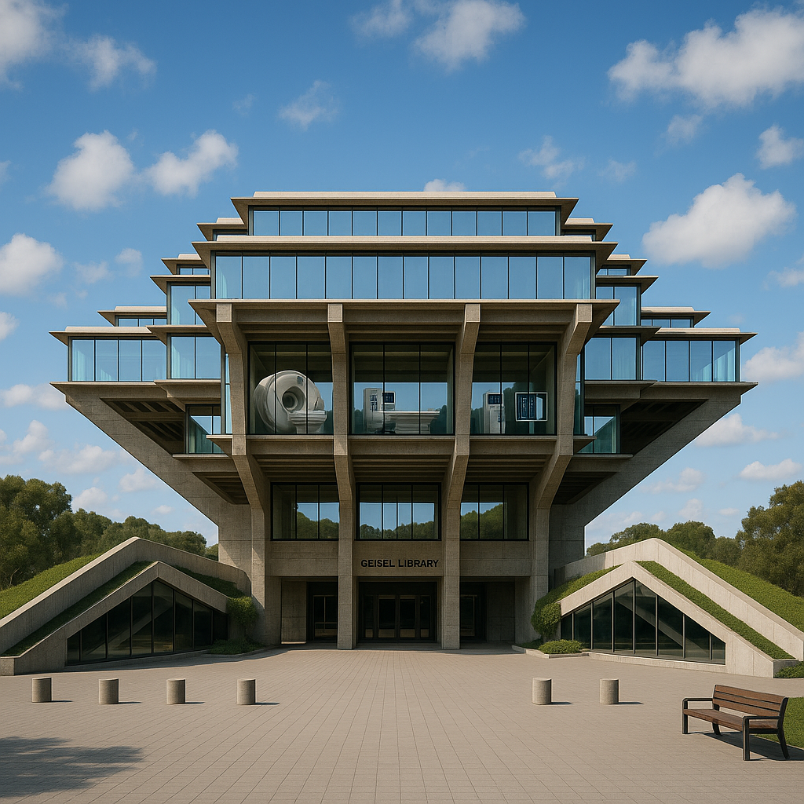
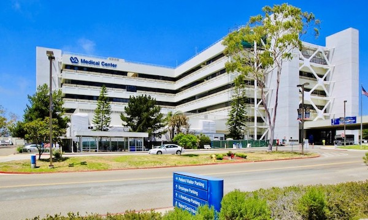

Neuroradiology at UC San Diego
Develop expertise in imaging of the brain, spine, and head and neck, with exposure to advanced techniques and research initiatives.
Myra Dang – mndang@health.ucsd.edu
Program Directors
Overview
The Neuroradiology fellowship at the University of California San Diego is an ACGME-certified clinical fellowship, which provides training in state-of-the-art neuroimaging and neurointerventional radiology. The fellow will receive extensive experience in diagnostic neuroimaging, including brain, spine, head/neck, and 4 weeks in pediatric neuroradiology as well as a longitudinal rotation in neurointerventional radiology for neurovascular procedures and spine/pain.
UC San Diego Health has multiple clinical care locations in La Jolla and Hillcrest, with all subspecialties represented. We are a Level I Trauma Center, Stroke Center, Epilepsy Center, Head/Neck Tumor Referral Center, Transplant Center, Burn Center, NCI designated Cancer Center, and Tertiary Referral Center. We perform essentially all advanced/functional neuroimaging for the San Diego metropolitan area. In addition, fellows, faculty, and residents provide clinical services at the San Diego Veterans Medical Center. Imaging modalities include CT, structural and advanced-technique MRI (multiple 1.5T and 3T scanners), neuroangiography and spinal interventions, and magnetoencephalography. Fellows also teach and present at conferences.
The neuroradiology fellowship program works with the UC San Diego School of Medicine Department of Radiology at locations including the UC San Diego Medical Center, the VA Medical Center, and the Jacobs Medical Center, providing Neurosurgery, Neurology, ENT, and Spine services. All hospitals are equipped with state-of-the-art imaging equipment for MR, CT, and neuro-diagnostic and interventional angiography. The Neuroradiology section is actively involved in Magnetoencephalography (MEG), Positron Emission Tomography (PET), and the Center for Functional Magnetic Resonance Imaging (fMRI).
The one-year fellowship offers an extensive research, clinical, and teaching curriculum. At the time of matriculation to the fellowship, you are expected to have completed an accredited radiology residency and to be an ACR Board Certified Radiologist.
How to Apply
This fellowship participates in the NRMP Match, and application deadlines are concordant with NRMP deadlines. You must register as a candidate on the NRMP website and the Electronic Residency Application Services (ERAS) will be used for the submission of applications.
Your completed application will be forwarded to Dr. James Chen for review. You will then be contacted about the possibility of an interview.
The application deadline for the 2025 Radiology Fellowship cycle for academic year 2026-27 appointments is December 15, 2024. Interview invitations will go out mid-December and interviews will begin in February 2025.
If you have any questions concerning the status of your application, send questions to:
Myra Dang, Fellowship Coordinator
mndang@health.ucsd.edu
James Chen, M.D.
Professor of Clinical Radiology
Program Director, Neuroradiology Fellowship
FAQ
UC San Diego staff are dedicated to teaching, clinical excellence, and research. We offer weekly and monthly interdisciplinary conferences, including a Neuroradiology Conference, Head/Neck Tumor Board, Brain Tumor Board, Neurology and Neurosurgery Grand Rounds (including Neuropathology Rounds), Epilepsy conference, Stroke conference, and didactic lectures in Pediatric Neuroradiology, MRI physics, and head/neck imaging.
Research is strongly encouraged and there are many areas to choose from. We have state-of-the-art CT, MRI (multiple 1.5T and 3T), ultrasound, and magnetoencephalography scanners, and employ the latest neurointerventional devices and techniques.
Who may apply for this fellowship?
You must be eligible for a California medical license at the time of matriculation and you are expected to have completed an accredited Radiology residency and to be an ACR Board Eligible/Certified Radiologist. Please refer to the requirements for California medical licensing at
Physician and Surgeon License | Medical Board of California. Foreign medical graduates without approved ACGME training should review those requirements in detail before applying.
Would you accept a fellow with a H-1B Visa?
No, unfortunately not. H-1B visas are not available to trainees at our institution.
How much vacation time do fellows receive?
Fellows receive four weeks of paid vacation per year (20 working days).
What is your Maternity/Paternity Leave Policy?
Fellows are allowed (in addition to vacation time) 4 weeks for maternity leave or 2 weeks for paternity leave.
What Medical Insurance Coverage and Malpractice Insurance do you offer?
The University offers an excellent health benefit package for fellows. Professional liability insurance is supplied by the University of California Regents. Please visit the GME page for additional benefits information.
Clinical Sites
Where Excellence Meets Experience
The UC San Diego Interventional Radiology Residency Program offers unparalleled clinical training at some of the nation’s top medical institutions. Our diverse clinical sites provide a comprehensive learning environment, exposing residents to a wide range of complex cases and state-of-the-art procedures. This multi-site approach ensures that our trainees gain the skills, knowledge, and experience needed to excel in interventional radiology and beyond.
UCSD Medical Center (Hillcrest)
This 390-bed hospital has one of two Level I Trauma Centers in the region and the only Regional Burn Center for San Diego and Imperial counties, offering critical emergency and specialized care.
View Location
San Diego, CA
Location
Trauma & Burn Care
Clinical Focus
50,000 Emergency Visits
Annual Stats
Critical Care
Research Opportunities

Jacobs Medical Center – La Jolla
A state-of-the-art medical facility offering advanced surgical, cancer, and cardiovascular care, supported by cutting-edge technology and innovative research programs.
View Location
San Diego, CA
Location
Trauma & Burn Care
Clinical Focus
50,000 Emergency Visits
Annual Stats
Critical Care
Research Opportunities

VA San Diego Healthcare System
Located near the La Jolla campus, this 350-bed hospital provides exceptional care for veterans and active-duty military while fostering advancements through extensive federally funded research.
View Location
San Diego, CA
Location
Veteran Health Care
Clinical Focus
350 Inpatient Beds
Annual Stats
VA Research
Research Opportunities
Rady Children’s Hospital – San Diego
The largest pediatric hospital in California and the only Level I Pediatric Trauma Center in the region, Rady Children’s Hospital delivers top-tier specialized care for children.
View Location
San Diego, CA
Location
Pediatric Care
Clinical Focus
Largest in CA
Annual Stats
Pediatric Imaging
Research Opportunities